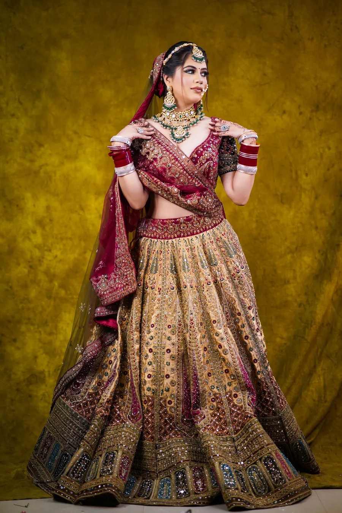
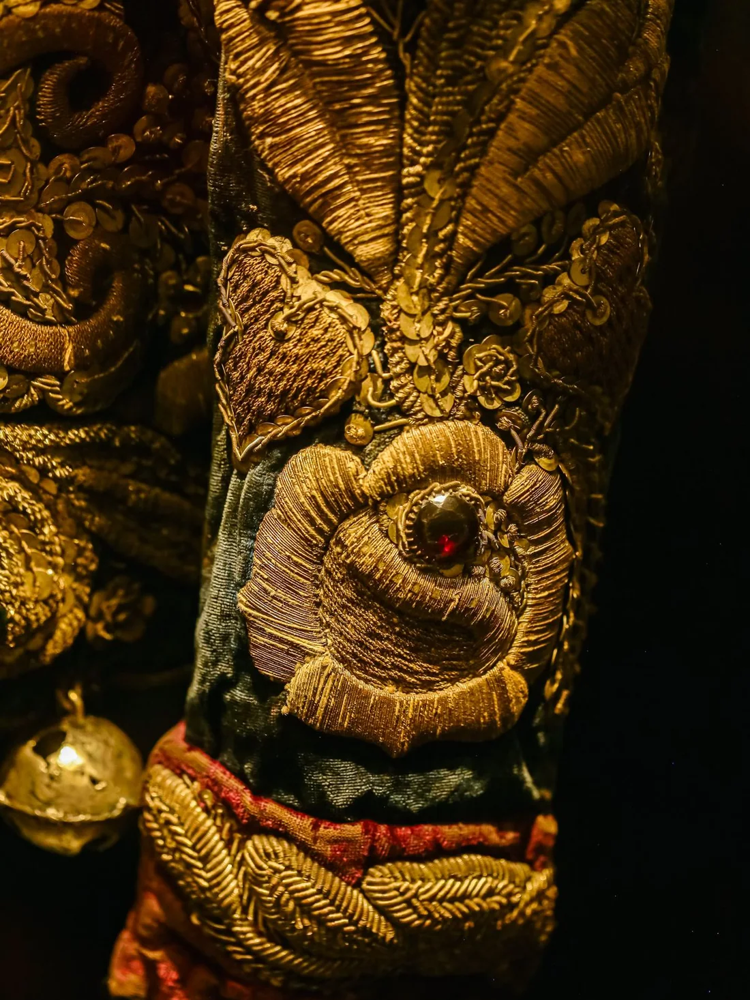
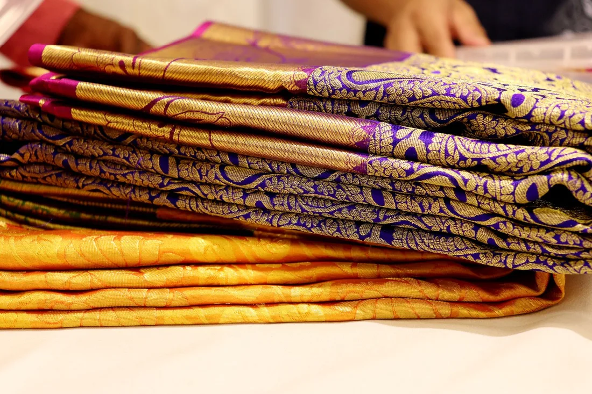
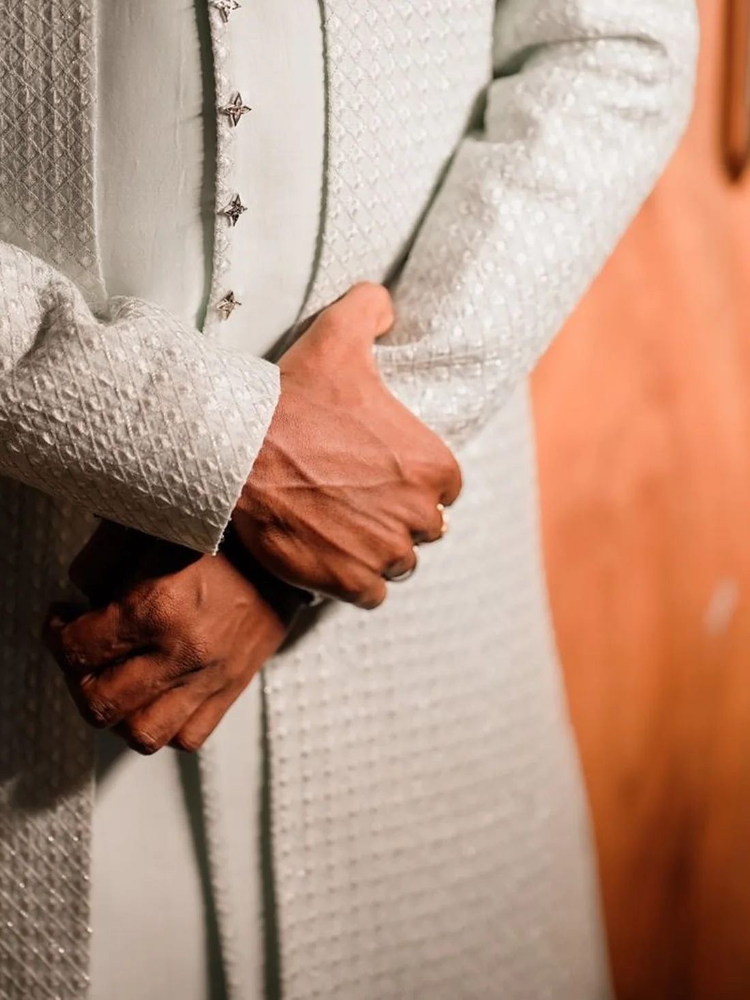
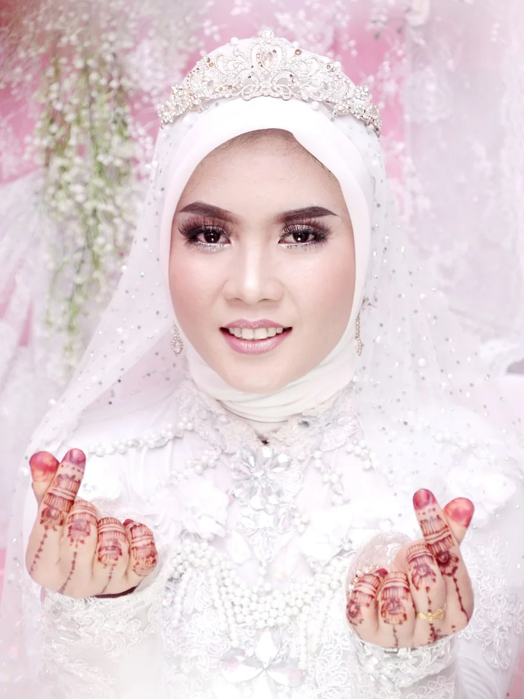
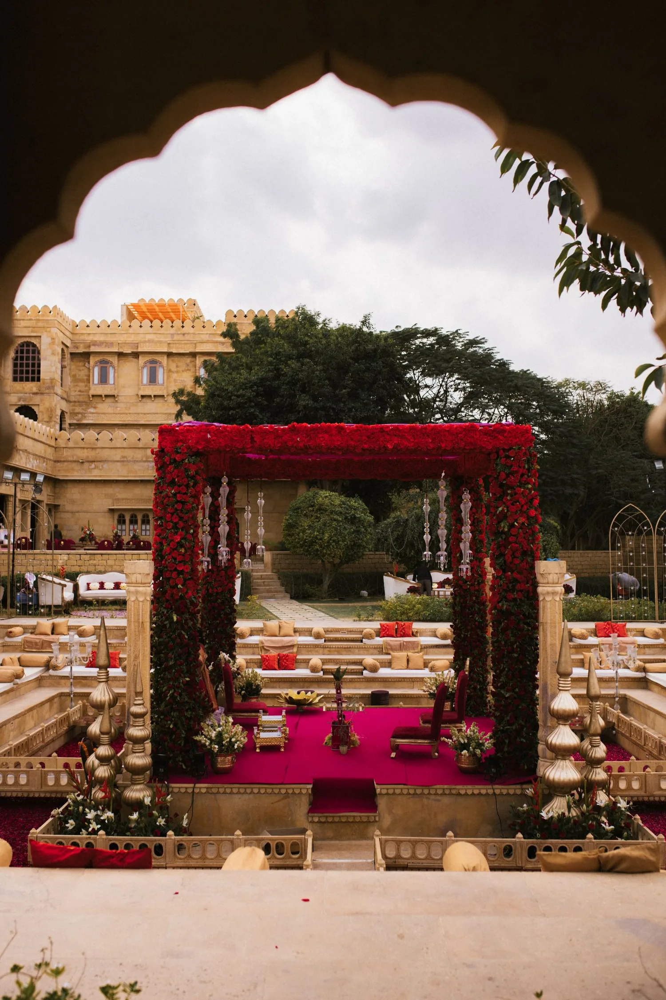

One team, one standard — for the food, the music, the mehendi, and every detail in between.
Lucknow is known for the subtlety of its flavours — for creating taste out of minimal spice.
When you use so little, every ingredient matters. A slight variation in the quality of a spice reflects on the texture, the aroma, and the taste of everything it touches. So we choose before we measure.
We source our ingredients from the best vendors across India — and we refuse to lower that bar, no matter the occasion or the crowd.

When taste is enhanced by coal, our degh stays on burning coals for hours. When a dish needs patience, we give it hours. Best Mughlai is a discipline, not a deadline.
Any kitchen can raise the flame and finish in two hours. We never do. Where the process is slow, our workers are paid for two full shifts — because rushing the food would be the only true waste.
Slow-cooked, whole-spiced, unmistakably Awadhi.


The newest, trendiest food reaches this city's tables first with FM — cooked live, served to our standard, at a price that stays competitive.


Banarsi chaat with multi-flavoured paani batashe, dahi batashe and tikki; a South-Indian dosa & idli counter; Chinese hakka & manchurian; Italian pasta; Peking soup; a flowing chocolate fountain; kulfi carts — and 8–10 varieties of Lucknowi mouth-fresheners to close the meal.
Every station carries a complete vegetarian line — because in this city, the newest food must also be the most inclusive.
As soon as a live concept reaches India, it reaches an FM event before it becomes everywhere.
Every station is sourced and served to the FM standard — nothing pre-made, nothing reheated.
Trendy food without the premium markup. That is how we stay in the conversation.
"A dastarkhwan sets the table. The qawwali sets the evening."
From the first alaap to the final salaam, qawwali turns a gathering into a celebration. We bring in the voices Lucknow trusts — trained, sincere, and able to hold a room in a single breath.

Lehengas and ghararas, conceived and crafted by the hands that have dressed Lucknow for over forty years.
FM has long been more than a kitchen. Behind the marriage halls we serve, our trusted ateliers craft traditional wear the old way — by hand, through artisans who have worked with us for four decades and more.
Conceived with the bride, drawn by our designers, finished by our artisans.
Multi-generational hands in Lucknow, Aligarh, and Kashmir.
Every stitch and every touch of zari is done the way it was a century ago.




Delicate shadow-work embroidery done by hand on fine cottons and chiffons — the city's quiet signature.
Gold and silver thread embroidery, raised and regal — made for the bride who must hold the room.
Tiny metallic wires worked into a glow that catches lamplight — jewel-precise, entirely by hand.
Brass wire inlaid into dark wood and fine accents — Aligarh's craft, framing the pieces around the outfit.
Hand-painted artistry on accessories and trousseau pieces — Kashmiri colour, by master naqashs.
Fine chain-stitch and needlework in soft wools and silks — heirloom craft for winters and beyond.

The most celebrated mehendi artisans, invited to your venue. Traditional by-hand application, with organic, high-quality mehendi that deepens to a rich, honest stain.
Renowned mehendi artists come to you — for the bridal hand and the family too.
Sourced for depth of colour and safety — nothing chemical, nothing rushed.
The same promise as our food: one standard, never lowered.
Beyond the food and the floor, we help you arrange the two things every celebration needs — a fitting venue and the tentage to hold your guests in comfort.
From intimate lawns to grand halls — the setting that fits your guest list and your vision.
Canopy, seating, and weather-proofing — arranged with suppliers we trust, to the FM standard.
If we don't arrange it ourselves, we connect you to the people we trust.

Tehzeeb, in every gesture.


In Lucknow, hospitality is not a task — it is a temperament. Knowing what a guest needs before they ask, and delivering it with grace that never feels like effort.
A dedicated team manages every detail on the day itself.
Experienced chefs oversee every degh, counter, and plate.
Head servers lead the floor to match the pace of your celebration.
Food, music, wear, mehendi, and the setting — held to one standard.
From the mehendi to the valima — food, service, and ambience, held to one standard.
Schools, workplaces, and institutions — dependable at scale, dignified in detail.
Birthdays, anniversaries, and intimate gatherings — handled like family.
Based at Jopling Road, Lucknow — and travelled-for across the city and nearby Uttar Pradesh.
Outside Lucknow? Ask us — we confirm travel arrangements with your quote.
Short, honest answers — before you even have to ask.
Yes. Weddings are our core — from the mehendi to the valima, including the dastarkhwan, live counters, qawwali, mehendi, traditional wear and venue assistance, all held to one standard.
Yes. Every station and every menu carries a complete vegetarian line — in Lucknow, the newest food must also be the most inclusive.
Yes. The qawwali evening, bridal mehendi and traditional wear are each available as standalone bookings, or combined with our catering for a complete FM experience.
Our live counters and menus are priced to stay competitive while never lowering the FM ingredient standard. Share your guest count and we will prepare a clear, itemised quote.
For wedding season, book 2–3 months ahead. For private events and institutions, even 1–2 weeks is usually fine. Contact us and we will confirm availability the same day.
We primarily serve Lucknow and nearby parts of Uttar Pradesh. Tell us the venue and we will confirm travel arrangements with your quote.